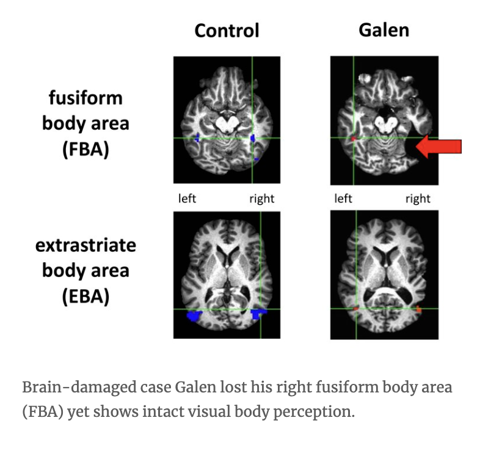

Here are some of the research topics we address in our work. For more details see our papers.
Cognitive representation. The format of mental representation is a core issue of cognitive science. Our work suggests that variations in facial features such as eye height are represented in a two-pool opponent system (Susilo et al 2010a) that is primarily face-specific (Susilo et al 2010b). Further, individual differences in the fidelity of eye height representation are related to face recognition ability (Dennett et al 2012). We also find that "holistic" face representation involves multiple components (Rezlescu et al 2017). Curiously, one holistic component – the face composite effect – does not seem related to face recognition ability either in acquired (Finzi et al 2015) or lifelong (Susilo et al 2010) prosopagnosia. More recently we show that representations of familiar and unfamiliar faces are more similar than assumed (Chapman et al 2018).
Functional specialisation. A fundamental issue in brain and cognitive sciences concerns the extent to which the mind consists of mechanisms specialised for processing specific information. Our research suggests that such mechanisms exist for faces. Prosopagnosics who show deficits at recognising faces can recognise non-face objects even when the objects require similar recognition demands as faces, such as bodies (Susilo et al. 2013) and visual words (Susilo et al. 2015). Face processing deficits in prosopagnosia can also be specific to facial identity recognition, sparing other aspects of face perception such as facial trait judgments (Rezlescu et al 2014). A recent discussion among leading prosopagnosia scientists however indicates that functional specialisation for faces remains debated, and that the prosopagnosia literature can greatly benefit from better quality data (Susilo 2018).
Developmental conditions. Lifelong prosopagnosia is a condition with varied behavioural profiles, but we know little about them (Susilo & Duchaine 2013). One reason is because prosopagnosia studies tend to test small samples, resulting in mixed results and biased estimates. Recently we have started to scale-up prosopagnosia research by testing participants in the hundreds to obtain clearer pictures. A recent study finds that facial expression deficits in prosopagnosia are rare, consistent with the idea that the core deficit of prosopagnosia is specific to facial identity processing (Bell & Susilo 2018).
Cognitive development. A profound question in psychology and neuroscience is how the brain and cognition mature and develop to reach the adult state. In face perception, this question translates into what aspects of face processing are innate and what aspects mature later and/or result from learning and experience. Our studies suggest that holistic face processing, as measured using the face composite effect, matures relatively early (Susilo et al 2009), although face recognition ability continues to improve well into adulthood (Susilo et al 2013).

Brain organisation. A landmark discovery in modern cognitive neuroscience is "category-selective" areas: functionally defined areas that respond selectively to complex stimuli including faces, bodies, scenes, and voices. Many consider these areas critical for normal processing of their preferred stimuli, but we find that at least some of them (the right fusiform body area, Susilo et al 2015; the voice-selective superior temporal sulcus, Jiahui et al 2017) can be damaged without any noticeable impact on relevant functions. More specific to face perception, the face processing network involves multiple face-selective areas, but what each area does and how they work together are unclear. My colleagues and I find that the area that represents facial identity regardless of image is the anterior temporal face area (ATL-FA), not the fusiform face area (FFA) or the occipital face area (OFA). Curiously, ATL-FA can appear functionally intact in an individual with damage to FFA and OFA (Yang et al 2016).
Evolutionary and social sciences. We are also interested in how face perception predicts real world outcomes and what this means for evolutionary and social theories. For example, we find that facial attractiveness predicts vote share for challengers but not for incumbents, casting doubt on the rational voting theory in politics and economics (Leigh & Susilo 2009).
- © Untitled
- Design: HTML5 UP